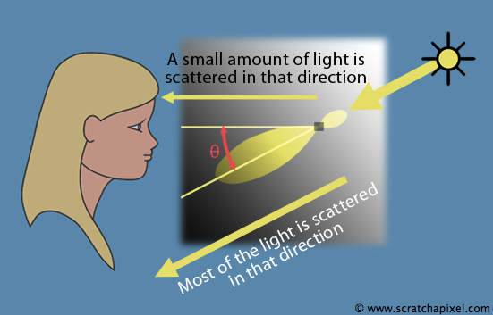

Structure of this Lesson
Rendering volumes such as fog, fire, clouds, smoke, and even skies etc. is slightly more complicated than rendering solid objects whether these objects are transparent or not. In order to simulate their appearance it is necessary to study the complex phenomenons that take place when light interacts with matter (light transport in volumes also called participating media in the CG literature). These phenomenons are the same when light interacts with solid objects however in the case of solid objects they can be greatly simplified. In the case of volumes, they can't be ignored nor simplified if the goal is to get a visually realistic image. To render volumes we usually need to use algorithms which are different from those we use to compute solid objects. Parameters to control the appearance of volumes, are also different from the controls we typically use to adjust the appearance of solid objects. For instance, solid objects color is usually controlled through a color parameter (known as the diffuse color or the albedo if the object is diffuse in appearance). The color of volumes on the other hand, is controlled through scattering and absorption coefficients (which we will explain soon). These differences can be disconcerting to an artist. The lesson aims at explaining these terms in an intuitive way. The next lesson will aim at providing information on volume rendering to readers with a background in programming. Information will be given about the ray marching algorithm which is the most common technique used to render volumes.
 Writing this lesson on volume rendering is an opportunity for us to pay tribute to the work done by the CG pioneer Ken Musgrave. He is one of the first persons to have released the source code of a simple ray-marcher on the internet in the early 90s and he has certainly been an inspiration for Scratch-a-pixel. We are glad to work in the continuity of people from the CG community who thought that sharing their knowledge for free on the internet was a good thing. Mugrave's code was explained in the book Texture and Modeling: a Procedural Approach (a long time classic) which he co-authored with other famous researchers from the field (D. Ebert, K. Perlin, D. Peachey, S. Worley). This program which we ran on SGI machines at the time, helped many of us understand the basics of volume rendering. We recently recompiled the code and rendered with it this image of a cloud on a blue background. The process of rendering volumes using a computer is truly mesmerising and one these things that made many of us addicted to CG.
Writing this lesson on volume rendering is an opportunity for us to pay tribute to the work done by the CG pioneer Ken Musgrave. He is one of the first persons to have released the source code of a simple ray-marcher on the internet in the early 90s and he has certainly been an inspiration for Scratch-a-pixel. We are glad to work in the continuity of people from the CG community who thought that sharing their knowledge for free on the internet was a good thing. Mugrave's code was explained in the book Texture and Modeling: a Procedural Approach (a long time classic) which he co-authored with other famous researchers from the field (D. Ebert, K. Perlin, D. Peachey, S. Worley). This program which we ran on SGI machines at the time, helped many of us understand the basics of volume rendering. We recently recompiled the code and rendered with it this image of a cloud on a blue background. The process of rendering volumes using a computer is truly mesmerising and one these things that made many of us addicted to CG.
What's Really Happening to a Beam of Light Hitting a Particle ?
Figure 1: a photon hitting an atom (or a particle) can either be absorbed (its energy can be for instance converted into heat) or scattered back into the world in a random direction.
From now on we will enter the realm of what's called in science, scattering. The phenomenons we will describe now applies to all kind of objects no matter what you consider them to be made of: molecules, solid or liquid particles, solid objects, etc. When light hits an atom of matter for instance, energy carried out by this light is transferred to the obstacle that then radiates this energy back in all directions (re-radiation). This effect is called the radiated scattering of the object. However the incident light energy can also be transformed into some other forms (such as thermal energy); this process is called absorption.
That is obviously a simplistic statement, but all there is to really know about the topic of light-matter interaction for this lesson, is the phenomenon of scattering and absorption. If you are interested in learning more about the topic we suggest you make a search on the web for Quantum Electrodynamics (QED) which attempts at explaining interesting questions such as why an atom absorbs or scatters a photon.
Figure 2: when a photon interacts with an atom for instance, if the photon is scattered back, it can leave the atom in any possible direction.
In the case of scattering, it's also important to remember that the photon can be re-emitted in all possible directions. We can't predict the direction a photon will take when it leaves an atom (we can't predict either if it will be scattered or absorbed). We can simply state that statistically, there's an equal probability that it leaves the atom in any possible direction over the unit sphere. We say that photons are scattered over a sphere of outgoing directions.
Figure 3: many photons hit the surface of the object your are looking at but only a few will be reflected back in the direction of your eyes. These photons are responsible for making the image of the object you are looking at.
Figure 4: from left to right. Spectralon the "whitest" material on earth. It reflects about 99% of the incident light. It absorbs very little light and scatters most of it. Coal on the other hand absorbs most of the incident light (hence its black appearance). This smoke train absorbs a lot of the light too (due to coal soot particles being mixed with water vapours). Finally clouds do not absorbs a lot of light and scatter most of it.
If the obstacle absorbs a photon, light is lost (the photon disappears). If the photon is scattered instead, light is re-emitted but in a direction which is likely to be different from that of the incident direction. This explains why you see objects around you. When a large number of photons coming from the same direction hit the surface of an object, they are reflected back (scattered) in all possible directions. When this direction matches the view direction (the vector from your eye to the point on the surface you are looking at), the photons will hit the surface of the eye (and you'll see the object).
Absorption and scattering apply to all objects. To make it easier to comprehend the effect they have on the appearance of volumes it is better to first understand their effect on solid objects. When an object is black it absorbs almost all the light. If an object is white, it absorbs very little light and scatters most of it back. Applied to volume: black smoke absorbs light, white volume objects such as cloud don't absorb much; most of the light is scattered back.
Absorption and scattering coefficients
Models which have been developed to simulate the appearance of volume objects (or predict the behaviour of light traversing volume objects) rely on what is usually referred to in the literature as the absorption and scattering coefficients (you will sometimes find them described as the absorption and scattering cross section - there's a slight difference between the two which is explained in the second chapter). As you can guess they both relate to the properties of the medium to absorb and scatter light. If you take a cube of dimension 1x1x1 and fill it with some medium (say smoke), they describe the probability that light will be either scattered or absorbed at a given point in this volume. They represent what we call in mathematics a probability density (but ignore the term for now) and their units are inverse length \(cm^{-1}\), \(m^{-1}\), etc.). They are usually written down as \(\sigma_a\) and \(\sigma_s\) (sigma). These coefficients can take any value greater than 0 and don't have an upper limit (for reasons we will explain soon).
Effect of the absorption coefficient
Let's imagine we have an observer, a medium and a light source (don't really think of this light source as point light but as an object (a tree in figure 5) reflecting light). For the sake of simplicity we will ignore scattering for a moment. We know the absorption coefficient of the medium and the amount of light emitted by the object (the tree). If the medium is placed between the source and the observer, we want to know how much light from the background will reach the observer after it has traveled through the medium.
Figure 5: light reflected by the tree is attenuated as travels through the volume in the direction of the eye. The amount of light I received by the eye is equal to I0 minus some light attenuated by the volume.
Figure 6: plot of the T equation for different values of the absorption coefficient (0.2, 0.4 and 0.8). The transmittance falloff becomes more pronounced as the absorption coefficient increases and so in turn the volume becomes more opaque.
Figure 7: the result of transmittance (aka opacity) on a cube (with dimensions 20x20 units) for various absorption coefficient values. Light enters the volume from the right, as it penetrates the volume it is attenuated. When the coefficient is 0.1 some light escapes the volume on the other side. When this value is higher it means the volume is dense enough that all of the light is absorbed before it reaches the far side of the cube. From the observer's point of view (figure xx), it means that these volumes would appear fully opaque (since no light from the background would pass through).
We know that light reflected by objects behind the volume will be attenuated as it travels through the medium due to absorption. The amount of light received is therefore necessarily lower that the amount of light emitted. The ratio between the light received by the observer and the incident light (the light emitted by the light source) is called transmittance (T). It corresponds to a change in radiance along a ray as light travels through a medium filled with absorbing particles. To compute this transmittance value we will be using what's known as the Lambert-Beer's law. The law states that there is a logarithmic relationship between the transmission, T, of light through a substance and the product of the absorption coefficient of the substance, \(\sigma_a\), and the distance the light travels through the material (i.e., the path length) l (the letter L). For gases (the equation is different for liquids) the equation is as follows:
$$T=\frac{I}{I_{0}}=e^{-\sigma_{a}l}$$A derivation for this formula is explained in the next lesson. Because transmittance describes a ratio, its value is always in the range 0 to 1. With this equation in hand, you can now easily compute the amount of light received on the other side of the medium. If you are not familiar with the exponential function we advise you to plot the function for various values of \(\sigma_a\) with a program such as Gnuplot (Linux) or Grapher (Mac).
To show the result of this equation in a more visual manner we will write a small program that will simulate the result of transmittance for a cube whose dimension is 20 units. For each pixel of our 2D cube (imagine that we are rendering an orthographic view of the cube) we will compute the transmittance using the Lambert-Beer's law:
Figure 7 shows the results for different values of the absorption coefficients (0.1, 0.2, 0.4 and 0.8). As expected, the higher the absorption, the quicker light gets absorbed. One very last important point to make: when the absorption coefficient is 0, the transmittance is 1. If there is no absorption, light is not attenuated at all.
Effect of the scattering coefficient
Let's go back now to the scattering coefficient. As mentioned earlier, when a photon is scattered by an obstacle, its outgoing direction is different from the incident direction. When light traveling towards the eye is scattered in another direction, the photon doesn't reach the eye. It means that scattering too is responsible for light attenuation because when a scattering event occurs, light traveling towards the eye is scattered away from the viewing direction. This phenomenon is called out-scattering.
Figure 8: out-scattering is the result of light being deflected away from the viewer due to scattering. It also contributes to light attenuation.
To account for attenuation due to out-scattering we will need to amend the Lambert-Beer's law.
$$T=e^{-(\sigma_{a}+\sigma_{s})l}=e^{-\sigma_{t}l}$$The coefficient \(t\) is called the extinction or attenuation coefficient.
To summarize, both the absorption and the scattering coefficients have an effect on transmittance (or on the opacity of the object if your prefer). If both coefficients are 0, the volume is completely transparent (i.e. light is traveling freely in the medium without being attenuated at all by either absorption or scattering).
Since the transmittance is computed with an exponential function, if we want the surface of the object to look so dense that it seems like a solid opaque surface, the absorption and scattering coefficients will need to be infinite. Which explains why these coefficients can take any positive values and don't have an upper limit.
What we have described so far is how the coefficients change the transmittance (opacity) of the medium. Think of the volume as a semi-opaque black layer in an image editor added on top of a background image (figure 9). You can change the opacity of that layer (make it more transparent or more opaque) by changing the absorption and scattering coefficients and thus indirectly the transmittance coefficient of the volume.
Figure 9: the tree and background seen through a volume from the observer's point of view for different extinction coefficient values. When in-scattering is ignored, the volume is only a light blocker. It appears completely black. Only its opacity (transmittance) changes.
In the real world however, volumes are rarely completely, if at all, black because they also reflect light (clouds are usually quite bright). This is another effect of scattering. Just as some light is lost due to out-scattering (photons being deflected away from the viewing direction), scattering will also cause some of the light to be deflected back along the viewing direction. This phenomenon is called in-scattering.
Figure 10: photons from other light paths join the light path that carries photons to the eye. This is known as in-scattering.
Figure 11: summary of the different phenomenons that take place while light travels through the media. Some of the light comes from the background (light reflected by the tree in the direction of the eye). Some of the light comes from a light source located above the volume and scattered back in the direction of the eye due to in-scattering.
What we have computed so far with the Lambert-Beer's law is the opacity of the volume object, in other words, how much light from the background (the tree) reached out the eye after it was attenuated by the medium whilst traveling through it. To our setup, we will now add a light above the volume (note that the tree is also a form of light). Everything in the scene that is reflecting light is a sort of light, but for the sake of this exercise, we will consider the light source as being the only source of light in the scene for now. We want to find out how much light from that light source will be scattered back in the viewing direction due to in-scattering. This ends up being slightly more complicated than just computing the transmittance and only a brief explanation will be given in this chapter (check the next lesson for a full technical description of the technique used to solve this problem).
As the light beam travels through the medium, two things happen: some of the light is lost due to absorption and out-scattering and some of the light is also gained along the way due to in-scattered light from the light source. That is, some other photons from the light source join the photons making up the light beam traveling along the viewing direction.
Figure 12: light from light sources is attenuated as it travels through the medium.
We need to take into consideration that light from the source is also attenuated as it travels in the medium. In the equations and algorithms we will be looking at in the next lesson, we will compute the distance from the point where the light entered the volume to the point where the light is scattered into the viewing direction, and use this distance with the medium coefficients to attenuate the light intensity being reflected back to the viewer using the Lambert-Beer's law again.
Scattering is therefore slightly more complicated to adjust than absorption because it contributes both to the opacity of the volume through absorption and to the diffuse appearance of the volume via the in-scattering effect.
Absorption and scattering coefficients are wavelength dependent
So far we have only considered that absorption and scattering coefficients were scalar values (real numbers or floats if you prefer). However in the real world, absorption and scattering are wavelength dependent phenomenons. As you may know white light passing through a prism can be decomposed into a continuous spectrum of colors (called pure spectral colors). Materials are selective about how they absorb and reflect each of these colors. If a material absorbs more blue light than it absorbs red and green light, then yellow, green and red objects placed behind the volume object would appear brighter than blue objects (assuming they have the same brightness before they get attenuated by the medium). Similarly for scattering, if a material scatters more blue than green and red light, it will appear bluish. The final appearance of the object, color wise, is therefore a mixture of colors resulting from the individual colors the light is made of being selectively absorbed and reflected by the medium.
These inter-related wavelength dependent effects can make it hard to tweak the appearance of a volumetric object. Skin is a good example of this complex relationship (skin is a translucent, highly scattering medium). It scatters more blue and green light than red light. It should therefore appear bluish (if there was only scattering), however it also absorbs way more blue and green light than it absorbs red light which explains why it looks more red than blue overall. In this case, absorption dominates over scattering but that's not the case for all materials. The following image (left) shows a volume simulation rendered with the absorption and the scattering coefficients of skin. Technically this means there should be one coefficient per wavelength covering the visible spectrum (from 380 to 780 nm). On the left, the spectral absorption coefficients of pure water (note how it absorbs more red and green than blue). However there's very little data available on the spectral scattering and absorption properties of real world materials and rendering volumes using spectral data would increase the render time quite a lot. Most systems use the conventional approach of specifying the coefficients properties of a medium using RGB values (which you can see as spectrum with only three samples). What's important to remember is that to change the color of a volumetric object, you need to modify its absorption and scattering coefficients which are defined as colors. Each component of these coefficients indicates how much red, blue and green is absorbed and scattered by the medium.
The Phase Function
When we introduced the concept of scattering we explained that when a photon was scattered back into the world by an atom, it could take any direction. Scattering explains why some of the light traveling through the medium in a direction originally different from the viewing direction (before it scatters), is reflected back in the direction of the viewer when it is scattered. If we had to draw this phenomenon in 2D, we would represent the atom as a disk and draw many arrows pointing away from the centre of the disk to indicate that the photons making up the incident light beam interacting with the atom, are reflected back in random directions (figure 2). When a light beam interacts with an atom, you can expect an equal fraction of the incident light to be reflected back in your direction no matter where you stand while looking at the object. There's no exception to this phenomenon. Photons are always scattered that way by matter.
However when you try to make the same experiment with a medium made of many particles for instance, you are likely to find that light is not scattered in equal fractions over the sphere of directions. You might find that the medium scatters more light in one direction than in others. Why shall you ask, since we have just clearly stated that the scattering phenomenon is isotropic, which is the technical term we should use to describe that a single particle scatters photon in every direction with equal probabilities. The word isotropy is derived from the Greek iso (equal) and tropos (direction). A particle on its own does not have a preference in which direction it scatters a photon back into the world. To the particle, all directions are equal.
However, apparently all directions are not equal to a medium. Why? When particles in a media are far away from each other (when the average distance between particles is several times greater than the wavelength of light traveling through the media), photons traveling in this media are not interacting with each other much. In the case of a dense homogeneous media, the spacing between particles (inter particle or atomic distance) may be much less than the light wavelength and in that particular case however, photons traveling through this medium are affected by what is called the phenomenon of wave interference.
Light as we know it is made of particles (the photon) but is also behaving like a wave. This is called the particle-wave duality of light. And everyone is more or less familiar with the concept of wave interference even if your experience of this is limited to throwing a bunch of rocks in the water and watching concentric circles traveling on the surface making interesting patterns while interacting with each other. In essence, wave interference can either strengthen the amplitude of the waves as they travel through space or weaken them. Why they are strengthen or weakened is just a matter of timing (when were the waves emitted) and a matter of spacing (where were they emitted). When two waves of similar frequency (wavelength, denoted with the Greek letter \(\lambda)) travel along the same path, they sum up but the result of this sum depends of the wave shift between the two waves. This is illustrated in figure 13. The top graph shows two curves (red and blue) with a very small phase shift. The result of these two curves traveling together along the same path is the green curve which amplitude is much higher than the two original waves (and the frequency (\lambda) is also about the same). This is known as constructive interference. The bottom graph shows the same two red and blue curves but they are now separated by a phase shift that is almost half of their frequency ((\lambda)/2). When we sum them up, we obtain a curve (green) which has almost no amplitude at all. The two curves have cancelled each other out. This is known as destructive interference.
Figure 13: constructive interference happens when two waves have no or little phase shift. As the phase shift increases to reach ?/2, the waves cancel out. This is known as destructive interference.
Constructive and destructive interference only depends on the phase shift between the two waves. Assuming that two sources emit waves of similar frequency, the time shift between emitted waves can be caused by the distance that separates the two sources and the time at which the sources started to emit. If they started emitting at the same time waves will have no phase shift. If they haven't, it's likely that a phase shift will exist. Similarly for distances, if the two sources have the same position in space there will be no phase shift between the waves emitted which results in constructive interference. If the distance that separates them is about half the frequency of the emitted waves (or any value that is a multiple of (\lambda) plus (\lambda/2)), it is likely that the waves will cancel out (destructive interference).
Figure 14: when the distance between the two sources is a multiple of the waves' frequency (top) constructive interference takes place. When you add ?/2 to this distance (bottom), then destructive interference takes place.
In mediums made of organised matter, that is, matter where particles are so close to each other that they arrange themselves in organised structures (aka regular patterns), light waves are heavily affected by the wave interference phenomenon while they propagate through these mediums. This is illustrated in the B&W figure. Incident light (coming from the top) is scattered in all directions by two particles. This re-radiation of photons can be seen as concentric waves emitted from the particles. However because the distance between these two particles is (\lambda)/2, waves emitted from s1 in the direction of s2 are cancelled out by waves emitted by s2 in the direction of s1. Destructive interference cancels out re-radiation of photons along directions which are orthogonal (perpendicular) to the incident light direction.
Figure 15: example of destructive interference in the lateral direction. Black dots indicated particles position in the media. The inter particle distance is lower than the light wavelength.
The same observation can be made with light waves traveling backward. A lot of them are cancelled out by light waves moving forward. The only light waves which are not greatly affected by wave interference are those who are scattered in the forward direction (this is particularly true of very dense media for which light travels almost undiminished in the forward direction).
This phenomenon explains why certain media do not seem to scatter light in an isotropic fashion. Such mediums are said to be anisotropic. The amount of light being scattered by the media is directionally dependent. It's important to remember that this property is very much related to the distance that separates particles in the medium. When the distance is large, the medium is more likely to exhibit an isotropic behaviour. Dense homogeneous mediums are likely to be anisotropic. In the example we have given, we have said that most of the light was scattered in the forward direction. But some media do scatter most of the light in the backward direction. We usually speak of forward and backward scattering to differentiate the two cases. A forward scattering media is a media in which incident light is scattered mainly in the forward direction and a backward scattering media is a media in which light is scattered back in the direction of where the light comes from. The set of directions and the amount of light scattered in these directions form the scattering profile of the media which can be represented with the adjacent diagram.
The lobes represent the directions in which light is scattered (angular distribution of light) and the amount of light scattered in each of these directions by the volume when illuminated from a specific direction (to emphasise that this not the scattering by a particle but by a media we have represented it as a square and not as a disk which is used to represent individual particles and atoms). There is a lobe oriented along the forward direction and another one oriented in the backward direction. By just looking at it, one can say that this medium is mainly forward scattering. The next diagram uses this lobe representation for a backward, isotropic and forward scattering material. Note that in the case of an isotropic medium the lobe is a disk (a sphere in 3D space) and that the lobes for the backward scattering are just a flipped version of the lobes from the forward scattering medium.
These are of course just three examples. You have to imaging that lobes can take any shape between a disk (isotropic scattering) and a very narrow/elongated lobe that would represent a highly anisotropic (forward or backward scattering) material. The lobes are aligned on the incident light direction. Because the medium is mainly forward scattering most of the light is scattered along that incident light direction but a small fraction is also scattered towards the eye (along the viewing direction).
Figure 16: plot of the Heyney-Greenstein phase function for g=0.9. Note the very prominent peak in the forward direction (light is coming from the left inside).
Figure 17: left, we used a front light to illuminate the volume. The mean cosine varies from -1 to 1. Note how the cloud is brighter for values of g lower than 0. Most of the light is scattered backwards towards the viewer. On the right, we used back lighting to illuminate the cloud. The volume is much brighter for values of the mean cosine greater than 0. Most of the light is transmitted forward in the direction of the eye. Note that the function doesn't work when g is set to -1 or 1.
If we were to reproduce the effect of anisotropic scattering by simulating what's happening to photons as they travel through the medium it would take a very very long time to render an image (considering the complexity of the phenomenons taking place and the amount of particles and photons that would be contained in a simulation). What we do instead, as we usually do in computer graphics, is to simplify this phenomenon by using a mathematical model called a phase function; it describes the amount of light (the angular distribution of light) from the incident light direction that is scattered into the viewing direction (towards the eye). In other words, the phase function is just an equation which we can use to shape a scattering profile using two very simple input parameters: the angle between the light incident direction and the viewing direction, and a parameter called the mean cosine, which describes the degree of anisotropy of the phase function. This parameter is also named average cosine, anisotropy phase eccentricity factor, asymmetry parameter, or g. Several models can be used for the phase function. There will be studied in the next lesson. The study of scattering was of particular interest in the last century and physicists kept developing new equations that would better fit experimental data; that explains why several models exist.
One of such equations commonly used by the computer graphics community is called the Henyey-Greenstein phase function (1941) but for reference we will also mention the Petzold phase function which was designed to fit the scattering profile of ocean waters, and the Mie and Rayleigh phase functions which are commonly used to simulate atmospheric scattering (sky). The mean cosine (g for commodity) of the Henyey-Greenstein phase function varies from -1 to 1. Backward scattering is obtained far values lower than 0 (-1 < g < 0), isotropic scattering is obtained when g=0, and forward scattering is obtained for values greater than 0 (0 < g < 1). The greater the value the more elongated the lobe. It's not uncommon for materials to have a peak in the backward direction which the Henyey-Greenstein phase function doesn't represent well. It is possible to combine two phase functions, one to model the forward scattering lobe (g > 0) and one to model the backward scattering peak (g2 < 0).
In rendering systems, the mean cosine is usually the third parameter exposed to the user along with the absorption and scattering coefficients.
Density
The density of volumes might seem to be the first thing we would like to speak in a lesson about volume rendering but it will be the last in our case. Of course without any particle in space there would be no scattering. However the role of density on the appearance of a volume object is in fact quite trivial. Volume density just relates to the amount of particles contained in a sample of volumes (lets say a cube of size 1x1x1). Considering what we know from absorption and scattering, you can now easily understand why the density of particles contained in the volume has an effect on the opacity of the media and its brightness. The more particles the more absorption which results in a more opaque volume object. The density of the volume is directly used in the Lambert-Beer's law as a multiplier to the absorption and scattering coefficients:
$$I=e^{-density(\sigma_{a}+\sigma_{s})l}$$Is there anything else we should know?
Volume rendering is a vast topic. There is no doubt that we will keep adding up new information to this lesson and the next in the future. We should probably speak about the emission of light by volumes and multiple scattering (photons being scattered multiple times) to be really complete. This will be addressed in a next revision of this document. You can also check other lessons on related topics especially the lesson on subsurface scattering and sky rendering. However, the version of this document covers the concepts that we think are most relevant to people CG artists. The next lesson will be more focused on the programming aspect of volume rendering.